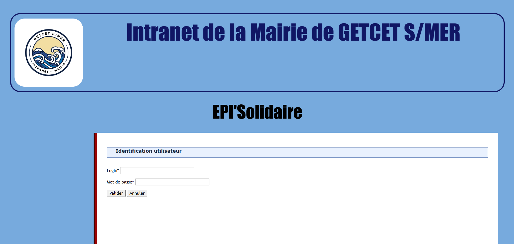
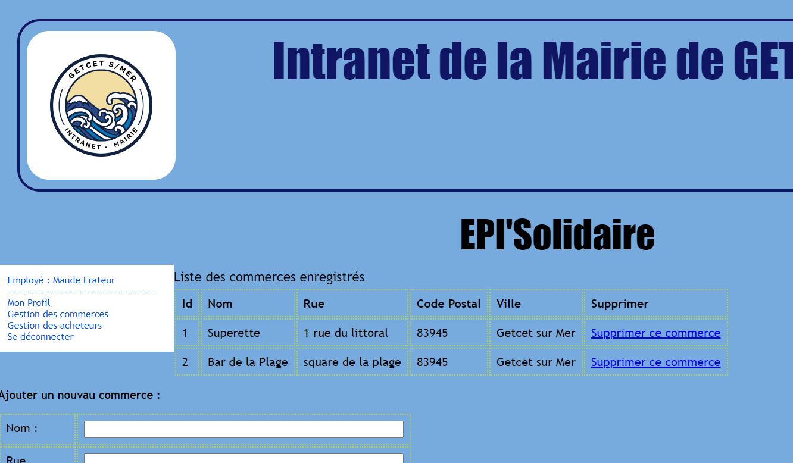

Description du projet
Dans le cadre d'un projet collaboratif, nous avons conçu une application web en PHP avec une architecture MVC dédiée à la gestion d'une épicerie solidaire mise en place par la ville fictive Getcet sur Mer. Cette application réservée aux utilisateurs (maires, secrétaires, commerçants, acheteurs et épiciers) donne la possibilité de gérer des dons, suivre des ventes et gérer des stocks de produits.
Bilan et autocritique
Il s'agit de mon tout premier projet de deuxième année. J'ai dû travailler en binôme sur l'entièreté du projet. Ce qui a donc posé le plus de problème était la gestion
de mon temps de travail ainsi que celui de ma binôme. La prise en main du MVC était également difficile au départ.